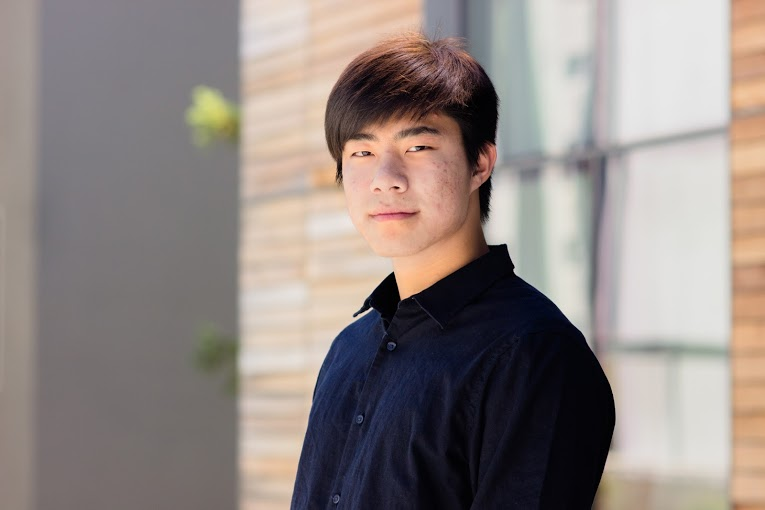

About Me
Hi, and welcome to my website! My name is Albert and I am a second-year Regents' Scholar studying computer science at UC Berkeley. Having lived in Los Angeles all my life, I decided that going to school far away from home would be a welcome change in my life, and it has been an incredibly rewarding experience. I joined the Regents and Chancellors' Scholarship Association(RCSA)'s web development committee and participated in a tutoring group called Computer Science Mentors as a junior mentor. Through these two organizations, I have found a community that is as passionate about computer science as I am.
Outside of school, I can often be found at the piano bench, working out, or spending time with my friends. If I have enough time on the weekends, I like to explore areas around Berkeley that I haven't been to yet.
My Path (So Far)
Though mathematics and science have always been my strongest subjects, I decided to attend a humanities program in high school with the intent to improve my writing skills. I received that, and more. Over the course of four years, I have been introduced to a multitude of varying viewpoints about the world--the most intriguing of which include the pivotal role of language in human thought. This exposure has piqued my interest in understanding how the human mind works, and I want to work in the field of artificial intelligence and machine learning. Additionally, this experience has pushed me to consider double majoring in cognitive science.